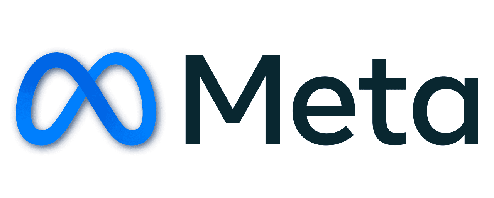
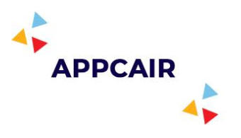
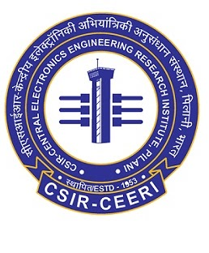

Experience
Machine Learning Research Engineer, Apple
Seattle, WA
- Own model development for Personalized Smart Reply in Messages, shipped with iOS 27.
- Built an on-device personalization pipeline modeling writing style, interpersonal signals, and conversational context to steer real-time SLM generation.
- Developed a generation-to-distillation framework for user profiling and response steering, reducing inference latency by ~3× while enabling privacy-preserving on-device inference.
- Currently expanding to proactive and holistic personalization, developing approaches for language models to understand and adapt to users across long-term preferences and device-wide interactions.
Research Intern, DatologyAI
Redwood City, CA · Supervisor: Priya Goyal
- Investigated data curation and augmentation algorithms to improve LLM pretraining efficiency through high-quality inputs.
- Explored data diversification through difficulty- and density-based selection in the representational embedding space; pretraining on this curated data improved training efficiency by 28.6% on large-scale text corpora.
- Synthetically rephrased raw corpora into high-quality learnable formats, reducing average perplexity on Pile by 31% and providing a 2.24x training speedup compared to equivalent raw-only data.

AI Resident, Meta
Menlo Park, CA · Supervisor: Haoran Li
- Selected among 35 candidates from 2,100 global applicants for the AI Residency 2022 cohort to pursue research at Meta AI.
- Project 1: Developed multimodal networks to detect content integrity violations in Virtual Reality worlds, reducing the average time to flag positives by 58%, using diffusion-based synthetic generation of visual positives and few-shot prototypical learning for this low-resource task.
- Project 2: Trained reward models to induce conversation styles of personalities in LLaMA-based AI Characters through feedback-based learning, including additional preference feedback from an AI Judge (RLAIF). The reward model achieved 77% alignment with human preference data on tone, style, and interestingness axes.

Undergraduate Researcher, APP Center for AI Research (APPCAIR), BITS Pilani & TCS Research
Goa, India · Supervisors: Dr. Gautam Shroff, Prof. Ashwin Srinivasan
- Designed a neuro-symbolic method to solve Raven's Progressive Matrices, inspired by the Neural Algorithmic Reasoning approach.
- Trained autoencoders to map symbolic and image representations into a shared latent space, and developed neural predicates to search the space of rules satisfying each problem instance.
- Achieved near-human performance on 4 of 7 configurations; the work was accepted as Knowledge-based Analogical Reasoning in Neuro-symbolic Latent Spaces at NeSy, IJCLR 2022.
Undergraduate Researcher, MIT Media Lab
Cambridge, MA, USA · Supervisor: Dr. Camilo Rojas
- Part of the Machine Learning team for Project Us, which uses AI to analyze interlocutors' speech, transcript, and facial-expression signals to help people build empathy, with real-time feedback.
- Improved the inference framework's performance, resource efficiency, and scalability, and surfaced additional insights for the live dashboard.
Applied Scientist Intern, Amazon
Bangalore, India
- Part of the Moderation Automation and Relevance Systems (MARS) team, ensuring quality advertising with automated detection of defects in video ads.
- Implemented and fine-tuned 3D ResNet–based video models for video quality assessment experiments.
- Trained a VGG-13 model to detect frames with letter/pillar-box defects, achieving 93.80% precision and 62.20% recall.
Research Intern, MIDAS Lab, IIIT Delhi
Delhi, India · Supervisors: Prof. Rajiv Ratn Shah, Ramit Sawhney
- Worked on techniques to improve model performance across modalities using the interpolative data augmentation method Mixup.
- Implemented a Mixup strategy for cross-lingual zero-shot learning on POS and NLI tasks (accepted at MRL, EMNLP).
- Extended this to saliency-aware span-wise Mixup in hyperbolic space, outperforming existing methods for low-resource settings across speech and vision (accepted at Interspeech).
- Formulated guidelines for parametrizing and training neural networks to optimally utilize hyperbolic geometry via language-specific curvature (accepted at NAACL 2024).
Software Engineering Intern, Google India
Hyderabad, India
- Worked on a project to enhance Gmail Search functionality.
- Built a Flume pipeline to replay queries and analyze aggregate differences between a proposed query-parsing stack and the current one, informing fixes for search-quality parity.
Software Engineer Intern, Microsoft India (R&D)
India
- Worked on the Carbon Dashboard project, providing granular insights and analysis of carbon emissions across buildings.
- Developed a Machine Learning time-series SARIMAX model to predict office attendance, enabling better resource planning and reduced carbon emissions.

Research Intern, CSIR – Central Electronics Engineering Research Institute (CEERI), Pilani
Pilani, Rajasthan, India
- Built deep learning models for Structural Health Monitoring damage classification using inter-storey drift ratio.
- Trained CNNs on simulated accelerometer signals to classify structural state based on damage, helping address vulnerable structures in the aftermath of a natural event.